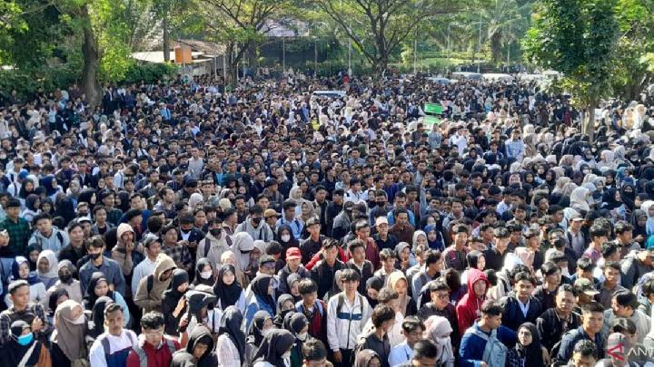
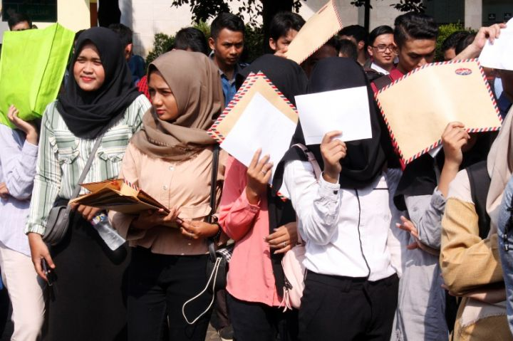
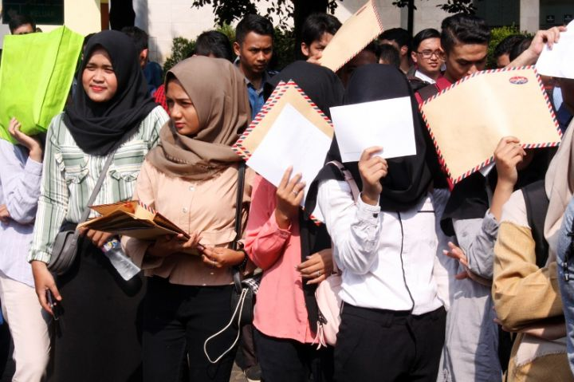
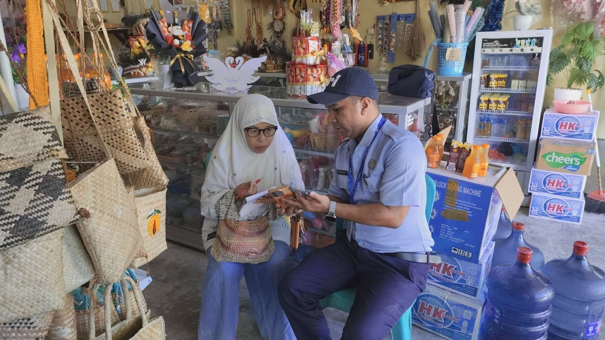
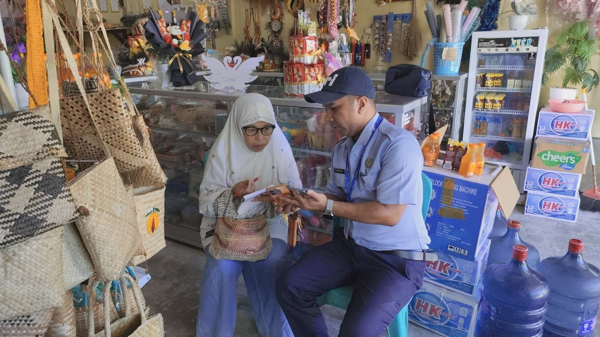
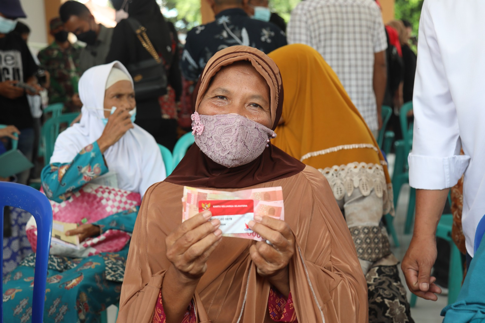
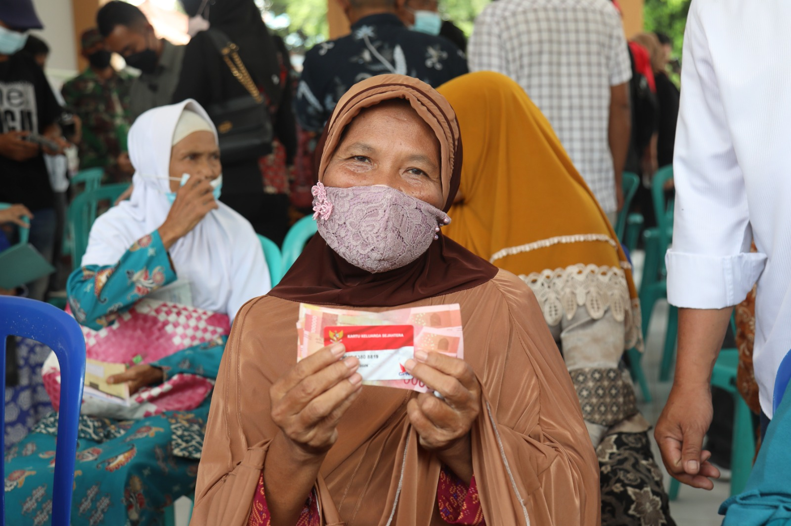

 


 

 

✶ Faktor Ekonomi
Tingkat pengangguran tinggi menjadi salah satu faktor utama dalam mengurangi angka kemiskinan di Indonesia. Sebagian dari masyarakat kesulitan dalam mendapat pekerjaan, sehingga pendapatan mereka berkurang. Sedangkan di sisi lain, masih banyak juga masyarakat yang tidak memiliki inisiatif atau semangat untuk bekerja, sehingga dampaknya membuat kualitas hidupnya semakin menurun tiap harinya. Kondisi ini, membuat mereka sulit dalam meningkatkan kualitas hidupnya dan memberikan mereka peluang kecil untuk mendapat pekerjaan di daerah terpencil atau pedesaan.
Inflasi dan kenaikan harga kebutuhan pokok, menurunkan daya beli masyarakat. Dengan kenaikan harga pangan, kebutuhan sehari-hari, dan lain-lain membuat masyarakat yang kekurangan untuk sulit dalam memenuhi kebutuhan sehari-hari mereka seperti makan-makanan bergizi, pendidikan, kesehatan. Kondisi ini membuat banyak masyarakat mengurangi pengeluaran pentingnya seperti makanan bergizi dan kesehatan. Akibatnya, kualitas gizi menurun dan kesehatannya terganggu, membuat kemampuan mereka untuk bangkit/balik bekerja sulit serta semakin sulit untuk keluar dari kemiskinan. Kenaikan harga ini, tentunya sangat berpengaruh bagi kondisi kehidupan mereka, dengan inflasi yang terus meningkat akan terus meningkat juga angka kemiskinan.
Produktivitas tenaga kerja rendah, membatasi kemampuan masyarakat untuk meningkatkan pendapatan sehari-harinya. Banyak pekerja atau masyarakat yang memiliki keterampilan terbatas, sehingga pendapatan yang mereka peroleh rendah. Kondisi ini membuat mereka sulit untuk menabung atau berinvestasi dalam upaya keluarnya dari lingkaran kemiskinan. Rendah produktivitas membatasi peluang masyarakat untuk mendapatkan pekerjaan atau membuka usaha. Hal ini membuat, resiko angka kemiskinan semakin bertambah dan terus berlanjut dari generasi ke generasi.
✶ Faktor Sosial
Kualitas sumber daya manusia rendah, menjadi faktor utama mengurangi angka kemiskinan. Banyak masyarakat yang tinggal di daerah terpencil, belum memiliki pengetahuan yang cukup untuk memperluas peluang kerja mereka. Akibatnya, pendapatan harian tetap rendah setiap harinya dan sulit untuk meningkatkan kualitas hidupnya. Jika kualitas sumber daya manusia tidak ditingkatkan melalui pendidikan dan pelatihan, angka kemiskinan akan terus bertambah dan sulit untuk dihindari.
Akses pendidikan yang tidak merata membuat banyak masyarakat yang berada di pedesaan sulit untuk mendapatkan kesempatan belajar. Hal ini membuat mereka, terbatasi untuk memperluas ilmu atau kemampuan mereka dalam memperoleh pekerjaan dan mendapatkan penghasilan. Kondisi ini, membuat mereka sulit dalam persaingan di dunia kerja dan berisiko akan terjebak. Selain itu, keterbatasan akses pendidikan mempengaruhi kualitas sumber daya manusia dalam mengatur kondisi keuangannya atau keterampilan hidupnya.
Kurangnya pelatihan keterampilan membuat masyarakat sulit untuk mengikuti perkembangan pasar kerja. Tanpa keterampilan dasar, masyarakat akan kesulitan dalam membuka usaha atau mendapat pekerjaan yang baik. Akibatnya, banyak masyarakat yang masih bergantung pada pekerjaan yang penghasilannya sedikit atau bantuan sosial dari pemerintah. Terakhir, kondisi ini tentunya membatasi peluang mereka untuk meningkatkan kualitas hidupnya.
✶ Faktor Budaya
Budaya kemiskinan tercermin dari kebiasaan yang membuat masyarakat tetap berada dalam kemiskinan. Banyak masyarakat atau keluarga yang terbiasa dan menerima kondisi hidup seadanya. Sehingga kehilangan atau kekurangan motivasi dalam meningkatkan kualitas hidupnya atau mencari peluang kerja. Kebiasaan ini memperkuat ketergantungan mereka pada bantuan sosial dari pemerintah, dan menutup diri mereka untuk memperluas kemampuan mereka.
Rasa ketergantungan terhadap bantuan menjadi hambatan dalam pengurangan angka kemiskinan. Banyaknya masyarakat yang lebih mengandalkan bantuan dari orang disekitarnya, sehingga tidak memiliki inisiatif akan berkembang atau membuka usahanya sendiri. Ketergantungan dan rasa malas ini membuat banyak masyarakat sulit mandiri.
Pola pikir masa depan yang terbatas membuat masyarakat sulit merencanakan keuangan dan meningkatkan kualitas hidupnya. Masyarakat cenderung menghabiskan uang atau penghasilan sekaligus tanpa memikirkan tabungan, investasi, atau masa depannya. Akibatnya, peluang untuk meningkatkan kualitas hidupnya terbatas dan kemiskinan terus berulang.
✶ Faktor Politik
Ketidakstabilan Kebijakan dapat mempengaruhi daya beli dan kesejahteraan masyarakat. Perubahan kebijakan yang tiba-tiba, seperti pengurangan subsidi, perubahan tarif, dan lain-lain membuat keuangan masyarakat menjadi sulit serta berantakan. Masyarakat menjadi tidak dapat memanfaatkan peluang ekonominya. Kondisi ini, meningkatnya resiko kemiskinan karena masyarakat sulit untuk menyesuaikan diri dengan perubahan kebijakan.